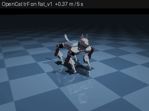
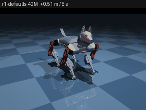
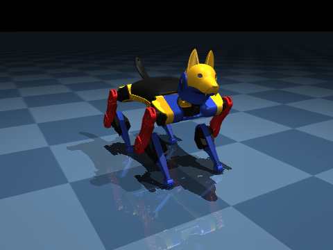
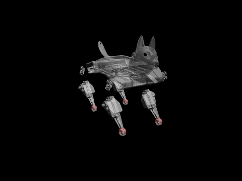
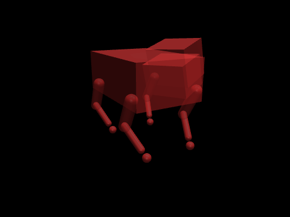
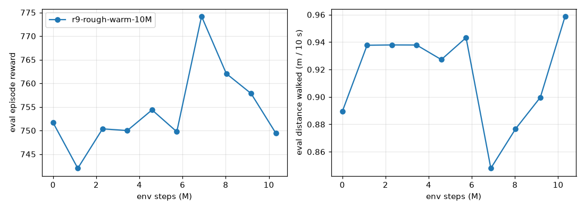
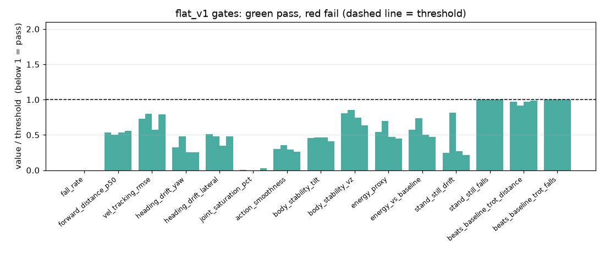
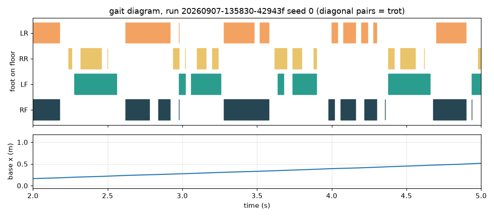
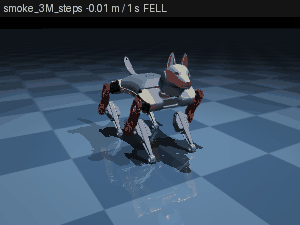
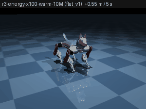

Orientation
Orientation·Chapter 1
How to use this
This is the working record for bittle-agent — plans, notes on fixes, what changed, what is broken, what got verified. It is the thing a developer reads first, including the developer who is you in three weeks with none of today's context.
It exists because the alternative kept failing. Work was tracked in chat transcripts that scroll away, in hosted reports that expire, and in loose PLAN-*.md files nobody could find. A plan that only one person can open is a plan that gets re-derived from scratch by the next person to touch the code.
The rule
At the end of every session, update this documentation.
If a plan was approved and only half-built, the plan goes in anyway, with status: in-progress and an explicit note on what is left. A half-finished plan that is written down is a handoff. A half-finished plan that is not is a mess for whoever opens the file next.
Three things follow from that:
- Plans land here once they are solid and approved — not before. A draft being argued over does not belong in the record; it would only be edited over and over. Approval is the moment it becomes a chapter.
- Every update reviews what is already here. Plans that shipped, ideas that stopped being relevant, problems that resolved themselves — mark them. A document that only ever grows stops being read.
- Nothing is deleted for being stale. It gets
status: supersededand one line saying what replaced it. A deleted plan cannot tell the next developer why it was dropped, and "why not" is the expensive question.
Writing a chapter
One file in chapters/. That is the entire job — there is no manifest to edit, no renumbering, no HTML:
---
part: Plans
status: approved
updated: 2026-09-07
review-by: 2026-09-09
---
# Short title saying what this is
What the problem is, what we decided, and how we will know it worked.The NN- prefix is a sort key and is stripped from the title. part decides which section of the page it lands in; a part that does not exist yet is created for it.
The fields
| Field | Meaning |
|---|---|
part | Which section of the page. Required. |
status | Where it is in its life. See below. |
updated | YYYY-MM-DD, when the content was last true. |
review-by | YYYY-MM-DD. The page marks it overdue after this date. |
owner | The service or area it is about, if not this repo. |
supersedes | The chapter this one replaces. |
A misspelled field is a hard build error, not a shrug — stat: instead of status: would silently drop the chapter out of the staleness review forever.
The statuses
| Status | Means |
|---|---|
approved | Agreed, not started. |
in-progress | Partly built. Say what is left. |
blocked | Started and stuck. Say on what. |
shipped | Built. Say what proved it. |
verified | Shipped and confirmed in the running system. |
superseded | Replaced. Name the replacement. |
abandoned | Deliberately not doing it. Say why — this is the valuable one. |
reference | Standing documentation, not a plan. Never goes stale. |
approved, in-progress and blocked are claims about the future, so they rot; the daily review looks at exactly those. The rest are claims about the past and are left alone.
Building and reading it
python3 documentation/build_docs.py # rebuild index.html
python3 documentation/build_docs.py --check # non-zero if the page is stale
python3 documentation/build_docs.py --status # front matter as JSON
python3 documentation/serve.py --open # read it locally on :8900Markdown is the source of truth. index.html is generated and must never be hand-edited — the next build overwrites it. A Stop hook rebuilds the page automatically when a chapter changes, so a stale page is not something you normally have to think about.
What does not belong here
- A standalone
.mdsomewhere else in the repo. It will not be found. - A hosted report or artifact. It expires from reach and cannot be diffed.
- Anything in a repo that serves no documentation. Write it where it can be read, and name the other service in the text instead.
RL walking trainer
RL walking trainer·Chapter 2
Teaching Bittle to walk: the RL training loop
Status 2026-09-07. Everything below was measured on the WSL2 dev PC (RTX 3090 Ti) unless marked otherwise.
Yes — the walking training has run. Two policies exist, both walk, and the GLM agent drove the second one itself. This page is the reference for how the loop works, what the numbers mean, and how to run it.
| Petoi trot (firmware gait, replayed) | Policy r1, 40M steps (defaults) | Policy r2, GLM's own cycle |
|---|---|---|
 |  |
All three clips: same simulator, same seed, same command (walk forward at 0.12 m/s), 5 s. The caption on each frame shows the distance covered. The neural-net policies walk further than the hand-tuned firmware trot.
1. What was built
GLM-5.3-Flash (Gold Spark vLLM)
│ tool calls
▼
bittle-agent (NAS :8008, 512 MB, no GPU) ──HTTP──▶ bittle-trainer (WSL2 PC :8009, RTX 3090 Ti)
▲ ├─ train/ MuJoCo Warp + Brax PPO, 2048 envs on the GPU
│ gate table + reflection ├─ eval/ CPU MuJoCo, full-mesh model, 20 seeded episodes
│ └─ suites/<suite>.yaml = the policy test suites
└── viewer_url ──▶ 3D viewer rollout playbackThe agent never writes training code. It edits a validated JSON config (reward weights, curriculum stage, domain-randomisation ranges, PPO hyper-parameters), launches a run, reads a gate report (pass/fail per metric plus a plain-English reflection), and proposes the next patch. One tool call, bittle_train_and_benchmark, is one full cycle.
Code map (all under bittle-agent/):
| path | role |
|---|---|
trainer/config.py | TrainConfig — the only thing the LLM edits; bounded, unknown keys rejected, hashed |
trainer/assets/build_models.py | generates the two MJCF variants from static/assets/bittle.xml |
trainer/assets/joint_map.py | the single place the joint conventions live (rear-shoulder mirror, 85° vs 80° knee) |
trainer/env/spec.py | observation / action / reward / termination, shared by CPU and GPU envs |
trainer/env/gpu_env.py, cpu_env.py | MuJoCo Warp (or MJX) batched env; CPU evaluator env |
trainer/train/ppo.py | Brax PPO wrapper, policy export to policy.npz |
trainer/eval/suites/*.yaml, gates.py | the gate suites (flat_v1, slope_v1, rough_v1; this chapter's numbers are flat_v1@1.0.0) and the reflection text |
trainer/eval/evaluator.py, baselines.py | seeded episodes, OpenCat gait replay, rollout recorder |
trainer/service.py | FastAPI on :8009, async jobs with long-poll |
trainer/campaign/ | scripted search through the same tools, no LLM (campaign.json is the reproduction log) |
app/training_tools.py, app/research_tools.py | the GLM tools; app/trainer_client.py the HTTP client |
2. The simulated robot
static/assets/bittle.xml is a MuJoCo model with physically weighed masses (273.5 g total, 55 g battery, 10.7 g per servo). Nothing in the repo loaded it before; the trainer now generates two variants from it.
| visual meshes | mesh collisions + foot spheres (CPU evaluator) | primitive collisions (GPU training) |
|---|---|---|
 |  |  |
Both variants weld the unactuated neck, add a 6 mm sphere at each paw tip with a contact sensor, and use a torque-limited servo model (P1S-like: kp 10 N·m/rad, ±0.25 N·m, joint damping 0.05). They settle at the same standing height (47.1 mm vs 47.0 mm), so a policy trained on the primitive model is graded on the mesh model.
The source model used kp 40 with joint damping 1.5 and no torque limit. With a realistic torque cap those joints cannot move at all (max 7°/s): the firmware trot measured 0.000 m and the first PPO runs "learned to stand". Always check
measured_degmoves before trusting a reward curve.
3. What the policy sees and does
Observation (41 numbers) — only things the real BiBoard can know from its IMU and its own command history:
| block | size |
|---|---|
| gravity direction in the body frame | 3 |
| gyro | 3 |
| velocity command (vx, vy, yaw rate) | 3 |
| last 3 commanded joint targets, relative to the stand pose | 24 |
| last action | 8 |
No joint encoders, no base velocity. Action: 8 target deltas of up to 6°/step at 50 Hz, clipped to the hardware profile's agent envelope, rounded to integer degrees, delayed 0–3 steps by domain randomisation.
Reward (per step, weights are the LLM's knobs): velocity tracking (exp of the squared error, σ = 0.01 because Bittle moves at 0.1–0.2 m/s), yaw-rate tracking, and penalties for vertical bounce, roll/pitch rate, tilt, height error, action rate, energy (|τ·q̇|), joint saturation, foot slip, and moving when told to stand; a small reward for foot air time.
Domain randomisation: floor friction 0.5–1.1, mass ±15 % plus 0–30 g payload, servo kp 6–15, torque 0.15–0.35 N·m, joint damping and friction, control latency 0–3 steps, gyro noise and bias, initial pose noise; pushes from curriculum stage 2.
4. Training results so far

| run | steps | wall-clock | throughput | gates | distance / 10 s | falls |
|---|---|---|---|---|---|---|
| smoke (1024 envs) | 3M | 137 s | 43k steps/s | — | stands, then falls under the walk command | — |
| r1-defaults-40M | 40M | 15 min | ~50k steps/s | 15 / 15 (13/14 under gates 1.0.0) | 1.13 m | 0 / 20 |
| r2-energy-fix-15M (GLM's patch) | 15M | 7.3 min | 34k steps/s | 15 / 15 (13/14 under 1.0.0) | 1.19 m | 0 / 20 |
OpenCat trF baseline | — | — | — | 8 / 14 | 0.997 m | 0 / 20 |

Under the original gate suite (1.0.0) both policies failed exactly one gate, energy_proxy (1.08 W and 1.39 W against a 1.0 W limit). The audit found the limit was an uncalibrated guess: the firmware trot itself measures 3.79 W on the same proxy. Under the calibrated suite (1.1.0) both runs pass every evaluated gate. The gate chart below is the 1.0.0 report, kept as the record of what the agent was reacting to. The GLM cycle raised the energy penalty ×10 and raised the foot-air-time reward; the second change won, the gait got longer and faster, and energy went up. GLM's own report says so and proposes reverting foot-air-time and raising the energy penalty next.
The learned gait is a trot — diagonal pairs land together:

Before training, for contrast (the 3M-step smoke policy falls as soon as it is asked to walk):

5. The agent's loop, as it actually happened
Transcript: runs/glm-session-2.sse (SSE events from the local bittle-agent, training mode).
bittle_trainer_health→ Warp backend, 3090 Ti, no jobs.bittle_list_runs→ leaderboard with r1 at 13/14 and the six baselines.bittle_propose_configwithbase_run_id= r1 → the resolved config and editable keys.bittle_benchmark_policyon r1 → re-read the failing gate.bittle_train_and_benchmarkwith a 3-key patch and a written hypothesis; 30 progress keepalives over 7.5 minutes; gate table and reflection returned.- Final report: which gates passed, an honest diagnosis of why energy got worse, the next hypothesis.
Every training-mode chat has a 12-turn budget and a 600 s LLM read timeout (the prompt carries ~37 tool schemas and GLM queues behind other sequences on Gold Spark).
6. Running it
# GPU box (this PC), once
trainer/scripts/setup_venv.sh # pinned deps; warp-lang MUST be 1.16.0
.venv-trainer/bin/python -m trainer.assets.build_models
.venv-trainer/bin/python -m trainer.eval.baselines # OpenCat gait baselines -> runs/baselines/
# GPU box, every session
trainer/scripts/run_service.sh # :8009, 8 cores, nice 10, half the VRAM
# regenerate the figures on this page
MUJOCO_GL=osmesa PYTHONPATH=$PWD .venv-trainer/bin/python trainer/scripts/render_docs.pyThen open the control panel, tick Training mode, and use the chips ("First training cycle", "Train until gates pass", "Research then propose", "Leaderboard & replay").
Without the LLM: python -m trainer.campaign --agent-url http://nas:8008 --strategy scripted_v1.
The one network step
npm run deploy pushes the container to the NAS — that direction works and has been done. The trainer is the other direction: the container on the NAS must open connections into this PC on port 8009. Windows blocks those inbound connections to the WSL2 address (10.0.0.171) until a rule exists. In an admin PowerShell:
New-NetFirewallRule -DisplayName "bittle-trainer 8009" -Direction Inbound -Protocol TCP -LocalPort 8009 -Action AllowUntil then the deployed agent answers every training tool with trainer_unavailable. Running bittle-agent locally on the PC (npm run dev with BITTLE_TRAINER_URL=http://127.0.0.1:8009) needs no rule, which is how the GLM session above was run.
7. Sizing and box choice
| path | measured | notes |
|---|---|---|
| MuJoCo Warp, 4096 envs, raw physics | 521k physics steps/s | bittle_gpu.xml |
| full env (obs + reward + DR), Warp | 24k steps/s @512 envs, ~50k @2048 | PPO JIT ≈ 1 min |
| same env on MJX (JAX) | 4k steps/s @512 envs | fallback, one flag |
| CPU MuJoCo, one thread | 34k physics steps/s (mesh) | gates: 20 episodes ≈ 1 min |
| VRAM | a few GB; JAX capped at 50 % |
The Sparks were not used on purpose: the job is tiny, they are aarch64 with sm_121 caveats, and they serve GLM.
8. Not done yet
- Sim-to-real is out of scope. Before any policy is driven onto the BiBoard, bittle-agent's joint-degree convention (STAND −45/80) must be translated to firmware degrees (OpenCat balance 30/30); the built-in keyframe trot/walk movesets also walk backwards in physics, so they were never physically validated.
- Curriculum stages 1–2 (turning, lateral, pushes), the DR-sweep gate and the GPU-vs-CPU consistency gate are implemented but have not been exercised by a real run.
- The 3D viewer rollout playback was checked on the JSON, not by eye.
RL walking trainer·Chapter 3
Training run ledger
Every policy training run recorded by the trainer, grouped by the gate suite it is judged on and newest last within a suite. Generated from runs/ by trainer/scripts/render_docs.py --ledger; rerun it after training and commit the result. Score = gates passed + 0.5·min(distance, 1) − fall rate, and it is only comparable WITHIN a suite. Each suite's protocol line comes from its yaml.
flat_v1 — 4 runs
Protocol flat_v1@1.2.0: 20 seeded episodes, 10 s, command [0.12, 0.0, 0.0], flat ground, CPU MuJoCo on the mesh model; 22 gates incl. the servo-safety fragment.
| # | run | task | started | parent | steps | envs | wall-clock | gates | distance p50 | falls | score | clip |
|---|---|---|---|---|---|---|---|---|---|---|---|---|
| 1 | 20260907-135830-42943f<br>r1-defaults-40M | flat_walk | 2026-09-07T20:58 | — | 40M | 2048 | 15.0 min | 15/15 | 1.13 m | 0.00 | 15.5 | gif |
| 2 | 20260907-142153-d17a72<br>r2-energy-fix-15M | flat_walk | 2026-09-07T21:21 | 20260907-135830-42943f | 15M | 2048 | 7.3 min | 15/15 | 1.19 m | 0.00 | 15.5 | gif |
| 3 | 20260907-165840-e406b4<br>r3-energy-x100-warm-10M | flat_walk | 2026-09-07T23:58 | 20260907-135830-42943f | 10M | 2048 | 6.4 min | 15/15 | 1.13 m | 0.00 | 15.5 | gif |
| 4 | 20260907-192026-85c9be<br>r4-flat-parent-critic-v2-40M | flat_walk | 2026-09-08T02:20 | 20260907-165840-e406b4 | 40M | 2048 | 18.4 min | 18/18 | 1.07 m | 0.00 | 18.5 | gif |
{kind=link}
{kind=link}
{kind=link}
{kind=link}
slope_v1 — 1 runs
Protocol slope_v1@1.0.0: 20 seeded episodes, 10 s, command [0.1, 0.0, 0.0], a 8.0 deg incline (tilted world), CPU MuJoCo on the mesh model; 16 gates incl. the servo-safety fragment.
| # | run | task | started | parent | steps | envs | wall-clock | gates | distance p50 | falls | score | clip |
|---|---|---|---|---|---|---|---|---|---|---|---|---|
| 5 | 20260907-193948-30a684<br>r5-slope-warm-10M | slope_up | 2026-09-08T02:39 | 20260907-192026-85c9be | 10M | 2048 | 6.3 min | 16/16 | 0.87 m | 0.00 | 16.4366 | gif |
{kind=link}
rough_v1 — 1 runs
Protocol rough_v1@0.2.0-uncalibrated: 20 seeded episodes, 10 s, command [0.12, 0.0, 0.0], 24 x 12 mm boxes (seed 11, spawn jitter 0.06 m), CPU MuJoCo on the mesh model; 15 gates incl. the servo-safety fragment.
| # | run | task | started | parent | steps | envs | wall-clock | gates | distance p50 | falls | score | clip |
|---|---|---|---|---|---|---|---|---|---|---|---|---|
| 6 | 20260907-194643-343fc2<br>r9-rough-warm-10M | rough_walk | 2026-09-08T02:46 | 20260907-193948-30a684 | 10M | 2048 | 7.3 min | 10/15 | 0.33 m | 0.00 | 10.1671 | gif |
{kind=link}
statue_v1 — 1 runs
Protocol statue_v1@1.0.0: 20 seeded episodes, 10 s, command [0.0, 0.0, 0.0], flat ground, CPU MuJoCo on the mesh model; 11 gates incl. the servo-safety fragment.
| # | run | task | started | parent | steps | envs | wall-clock | gates | distance p50 | falls | score | clip |
|---|---|---|---|---|---|---|---|---|---|---|---|---|
| 7 | 20260907-194644-ea153a<br>r7-statue-warm-10M | statue | 2026-09-08T02:46 | 20260907-192026-85c9be | 10M | 2048 | 6.2 min | 11/11 | 0.01 m | 0.00 | 11.006 | gif |
{kind=link}
spin_v1 — 1 runs
Protocol spin_v1@0.1.0-uncalibrated: 20 seeded episodes, 10 s, command [0.0, 0.0, 0.5], flat ground, CPU MuJoCo on the mesh model; 11 gates incl. the servo-safety fragment.
| # | run | task | started | parent | steps | envs | wall-clock | gates | distance p50 | falls | score | clip |
|---|---|---|---|---|---|---|---|---|---|---|---|---|
| 8 | 20260907-194644-799782<br>r6-spin-warm-10M | spin | 2026-09-08T02:46 | 20260907-192026-85c9be | 10M | 2048 | 5.3 min | 9/11 | 0.07 m | 0.00 | 9.0365 | gif |
{kind=link}
backward_v1 — 1 runs
Protocol backward_v1@1.0.0: 20 seeded episodes, 10 s, command [-0.12, 0.0, 0.0], flat ground, CPU MuJoCo on the mesh model; 13 gates incl. the servo-safety fragment.
| # | run | task | started | parent | steps | envs | wall-clock | gates | distance p50 | falls | score | clip |
|---|---|---|---|---|---|---|---|---|---|---|---|---|
| 9 | 20260907-194644-907826<br>r8-backward-warm-10M | backward_walk | 2026-09-08T02:46 | 20260907-192026-85c9be | 10M | 2048 | 6.8 min | 12/13 | -0.94 m | 0.00 | 11.5323 | gif |
{kind=link}
Run 1: r1-defaults-40M (20260907-135830-42943f)
- Task / suite: flat_walk / flat_v1@1.1.0; from scratch
- Status: done
- Hypothesis / notes: first full run through the service (servo model kp10/0.25Nm)
- Config vs defaults:
init_from_parent: True → Nonereward.weights.foot_clearance: 0.0 → Nonereward.weights.slope_progress: 0.0 → Nonereward.weights.stall: 0.0 → Nonereward.weights.stumble: 0.0 → Nonetask: flat_walk → Noneterrain: {'kind': 'flat', 'level': 0, 'slope_deg': [0.0, 0.0], 'slope_yaw_deg': [0.0, 0.0], 'n_boxes': 0, 'box_height_m': [0.0, 0.0], 'box_size_m': [0.02, 0.06], 'box_spacing_m': 0.12, 'box_yaw_deg': [-45.0, 45.0], 'field_start_m': 0.15, 'field_width_m': 0.4, 'spawn_jitter_m': 0.0} → None- Training: 40M steps, 2048 envs, 900 s, 44,419 steps/s (warp); eval reward 16 → 762
- Gates: 15/15; failing: none
- Reflection: BENCHMARK PASSED 15/15 gates (score 15.50). Fell in 0/20 episodes. Median distance 1.13 m in 10.0 s. Velocity tracking RMSE 0.037 m/s. 4 gates not evaluated (stage/group/metric). All evaluated gates pass. Consider raising curriculum_stage or requesting dr_sweep.
Run 2: r2-energy-fix-15M (20260907-142153-d17a72)
- Task / suite: flat_walk / flat_v1@1.1.0; from scratch
- Status: done
- Hypothesis / notes: Fix energy_proxy gate (1.082W > 1.0W): 10x stronger energy penalty (-0.0005 -> -0.005) per gate hint; raise feet_air_time 0.1 -> 0.25 to encourage longer strides / fewer steps so mean power drops without sacrificing speed (protects tight beats_baseline_trot_distance gate at 1.1m). num_timesteps 40M -> 15M for a short cycle.
- Config vs parent 20260907-135830-42943f:
ppo.num_timesteps: 40000000 → 15000000reward.weights.energy: -0.0005 → -0.005reward.weights.feet_air_time: 0.1 → 0.25- Training: 15M steps, 2048 envs, 436 s, 34,401 steps/s (warp); eval reward 16 → 688
- Gates: 15/15; failing: none
- Reflection: BENCHMARK PASSED 15/15 gates (score 15.50). Fell in 0/20 episodes. Median distance 1.19 m in 10.0 s. Velocity tracking RMSE 0.040 m/s. 4 gates not evaluated (stage/group/metric). All evaluated gates pass. Consider raising curriculum_stage or requesting dr_sweep.
Run 3: r3-energy-x100-warm-10M (20260907-165840-e406b4)
- Task / suite: flat_walk / flat_v1@1.1.0; warm start from 20260907-135830-42943f
- Status: done
- Hypothesis / notes: energy weight x100 (its share was 0.05% of reward); warm start from r1; 10M steps
- Config vs parent 20260907-135830-42943f:
init_from_parent: None → Trueppo.num_timesteps: 40000000 → 10000000reward.weights.energy: -0.0005 → -0.05- Training: 10M steps, 2048 envs, 381 s, 26,217 steps/s (warp); eval reward 741 → 761
- Gates: 15/15; failing: none
- Reflection: BENCHMARK PASSED 15/15 gates (score 15.50). Fell in 0/20 episodes. Median distance 1.13 m in 10.0 s. Velocity tracking RMSE 0.028 m/s. 4 gates not evaluated (stage/group/metric). All evaluated gates pass. Consider raising curriculum_stage or requesting dr_sweep.
Run 4: r4-flat-parent-critic-v2-40M (20260907-192026-85c9be)
- Task / suite: flat_walk / flat_v1@1.2.0; cold start (critic input layout differs (parent privileged_version 1, this trainer 2); cold start)
- Status: done
- Hypothesis / notes: M0b: the run-3 config retrained from scratch under the terrain-aware critic layout (privileged_version 2); the parent of every terrain run
- Config vs parent 20260907-165840-e406b4:
ppo.num_timesteps: 10000000 → 40000000reward.weights.foot_clearance: None → 0.0reward.weights.slope_progress: None → 0.0reward.weights.stall: None → 0.0reward.weights.stumble: None → 0.0task: None → flat_walkterrain: None → {'box_height_m': [0.0, 0.0], 'box_size_m': [0.02, 0.06], 'box_spacing_m': 0.12, 'box_yaw_deg': [-45.0, 45.0], 'field_start_m': 0.15, 'field_width_m': 0.4, 'kind': 'flat', 'level': 0, 'n_boxes': 0, 'slope_deg': [0.0, 0.0], 'slope_yaw_deg': [0.0, 0.0], 'spawn_jitter_m': 0.0}- Training: 40M steps, 2048 envs, 1104 s, 36,242 steps/s (warp); eval reward 14 → 738
- Gates: 18/18; failing: none
- Reflection: BENCHMARK PASSED 18/18 gates (score 18.50). Fell in 0/20 episodes. Median distance 1.07 m in 10.0 s. Velocity tracking RMSE 0.039 m/s. 4 gates not evaluated (stage/group/metric). All evaluated gates pass. Consider raising curriculum_stage or requesting dr_sweep.
Run 5: r5-slope-warm-10M (20260907-193948-30a684)
- Task / suite: slope_up / slope_v1@1.0.0; warm start from 20260907-192026-85c9be
- Status: done
- Hypothesis / notes: M3: flat champion warm-started onto the 0-8 deg tilted world (terrain level 1)
- Config vs parent 20260907-192026-85c9be:
ppo.num_timesteps: 40000000 → 10000000task: flat_walk → slope_upterrain.kind: flat → slopeterrain.level: 0 → 1terrain.slope_deg: [0.0, 0.0] → [0.0, 8.0]- Training: 10M steps, 2048 envs, 379 s, 26,376 steps/s (warp); eval reward 742 → 770
- Gates: 16/16; failing: none
- Reflection: BENCHMARK PASSED 16/16 gates (score 16.44). Fell in 0/20 episodes. Median distance 0.87 m in 10.0 s. Velocity tracking RMSE 0.026 m/s. Parent 20260907-192026-85c9be has no slope_v1 benchmark (it was benchmarked on flat_v1), so there is no per-gate parent comparison. Re-benchmark it with bittle_benchmark_policy(run_id="20260907-192026-85c9be", suite="slope_v1", force=true) if you want the delta. All evaluated gates pass. Consider raising curriculum_stage or requesting dr_sweep.
Run 6: r9-rough-warm-10M (20260907-194643-343fc2)
- Task / suite: rough_walk / rough_v1@0.2.0-uncalibrated; warm start from 20260907-193948-30a684
- Status: done
- Hypothesis / notes: M5: slope champion warm-started onto 12 mm rocks with foot_clearance and stumble switched on
- Config vs parent 20260907-193948-30a684:
reward.weights.foot_clearance: 0.0 → -0.5reward.weights.stumble: 0.0 → -0.5task: slope_up → rough_walkterrain.box_height_m: [0.0, 0.0] → [0.003, 0.012]terrain.kind: slope → roughterrain.level: 1 → 2terrain.n_boxes: 0 → 20terrain.slope_deg: [0.0, 8.0] → [0.0, 0.0]terrain.spawn_jitter_m: 0.0 → 0.05- Training: 10M steps, 2048 envs, 440 s, 22,702 steps/s (warp); eval reward 752 → 749
- Gates: 10/15; failing: forward_distance_p50 (0.334 >= 0.45), progress_ratio (0.278 >= 0.4), vel_tracking_rmse (0.125 <= 0.08), foot_clearance (1.225 >= 8.0), beats_baseline_trot_distance (0.878 >= 1.1)
- Reflection: BENCHMARK FAILED 10/15 gates (score 10.17). Fell in 0/20 episodes. Median distance 0.33 m in 10.0 s. Velocity tracking RMSE 0.125 m/s. FAIL forward_distance_p50: 0.334 >= 0.45 m (firmware trot 0.381) -> 1.1 x the firmware trot's 0.381 m across this field rounds to 0.42, kept at 0.45; ideal is 1.2 m at 0.12 m/s for 10 s FAIL progress_ratio: 0.278 >= 0.4 ratio (firmware trot 0.317) -> distance / (commanded speed x seconds); the robot is getting stuck on edges FAIL vel_tracking_rmse: 0.125 <= 0.08 m/s (firmware trot 0.113) -> tighten tracking_sigma or raise tracking_lin_vel FAIL foot_clearance: 1.225 >= 8.0 mm (firmware trot 0.724) -> median swing-foot height above the local terrain; raise the foot_clearance penalty (target 12 mm). The 'foot_clearance' term is only 0.01% of the total reward, so the optimiser barely sees it: multiply its weight by ~333x (to ~2% share), not by 2-10x. (+1 more failing gates in the table) Parent 20260907-193948-30a684 has no rough_v1 benchmark (it was benchmarked on slope_v1), so there is no per-gate parent comparison. Re-benchmark it with bittle_benchmark_policy(run_id="20260907-193948-30a684", suite="rough_v1", force=true) if you want the delta.
Run 7: r7-statue-warm-10M (20260907-194644-ea153a)
- Task / suite: statue / statue_v1@1.0.0; warm start from 20260907-192026-85c9be
- Status: done
- Hypothesis / notes: M7: push-resistant stand from the flat champion (pushes 0.3-1.0 m/s)
- Config vs parent 20260907-192026-85c9be:
commands.vx: [0.05, 0.2] → [0.0, 0.0]dr.push_enabled: False → Truedr.push_interval_s: [3.0, 6.0] → [1.5, 3.0]dr.push_vel: [0.1, 0.3] → [0.3, 1.0]ppo.num_timesteps: 40000000 → 10000000reward.weights.base_height: -1.0 → -2.0reward.weights.feet_air_time: 0.1 → 0.0reward.weights.feet_slip: -0.05 → 0.0reward.weights.orientation: -2.0 → -4.0reward.weights.stall: 0.0 → -0.05reward.weights.stand_still: -0.2 → -1.0task: flat_walk → statue- Training: 10M steps, 2048 envs, 370 s, 27,025 steps/s (warp); eval reward 382 → 452
- Gates: 11/11; failing: none
- Reflection: BENCHMARK PASSED 11/11 gates (score 11.01). Fell in 0/20 episodes. Median distance 0.01 m in 10.0 s. Velocity tracking RMSE 0.025 m/s. Parent 20260907-192026-85c9be has no statue_v1 benchmark (it was benchmarked on flat_v1), so there is no per-gate parent comparison. Re-benchmark it with bittle_benchmark_policy(run_id="20260907-192026-85c9be", suite="statue_v1", force=true) if you want the delta. The firmware stand cannot do this task (travels 0.01 m, falls 0/20), so there is no baseline to beat on statue_v1; the ratio gates are not evaluated and the absolute distance gate carries the bar. All evaluated gates pass. Consider raising curriculum_stage or requesting dr_sweep.
Run 8: r6-spin-warm-10M (20260907-194644-799782)
- Task / suite: spin / spin_v1@0.1.0-uncalibrated; warm start from 20260907-192026-85c9be
- Status: done
- Hypothesis / notes: M7: pirouette from the flat champion (wz +-0.8, feet_slip relaxed)
- Config vs parent 20260907-192026-85c9be:
commands.vx: [0.05, 0.2] → [0.0, 0.0]commands.wz: [0.0, 0.0] → [-0.8, 0.8]ppo.num_timesteps: 40000000 → 10000000reward.weights.feet_slip: -0.05 → -0.02reward.weights.stall: 0.0 → -0.05reward.weights.tracking_ang_vel: 0.5 → 2.0task: flat_walk → spin- Training: 10M steps, 2048 envs, 316 s, 31,691 steps/s (warp); eval reward 104 → 1232
- Gates: 9/11; failing: spin_rate_rmse (0.434 <= 0.1), centre_drift (0.081 <= 0.08)
- Reflection: BENCHMARK FAILED 9/11 gates (score 9.04). Fell in 0/20 episodes. Median distance 0.07 m in 10.0 s. Velocity tracking RMSE 0.021 m/s. FAIL spin_rate_rmse: 0.434 <= 0.1 rad/s (firmware trot 0.639) -> raise tracking_ang_vel or loosen ang_tracking_sigma; the firmware turn manages ~0.15 rad/s FAIL centre_drift: 0.081 <= 0.08 m (firmware trot 0.438) -> the torso must stay put: with vx=vy=0 commanded, tracking_lin_vel penalises translation Parent 20260907-192026-85c9be has no spin_v1 benchmark (it was benchmarked on flat_v1), so there is no per-gate parent comparison. Re-benchmark it with bittle_benchmark_policy(run_id="20260907-192026-85c9be", suite="spin_v1", force=true) if you want the delta.
Run 9: r8-backward-warm-10M (20260907-194644-907826)
- Task / suite: backward_walk / backward_v1@1.0.0; warm start from 20260907-192026-85c9be
- Status: done
- Hypothesis / notes: M7: backward walk from the flat champion (vx -0.20..-0.05)
- Config vs parent 20260907-192026-85c9be:
commands.vx: [0.05, 0.2] → [-0.2, -0.05]ppo.num_timesteps: 40000000 → 10000000reward.weights.stall: 0.0 → -0.05reward.weights.tracking_lin_vel: 1.5 → 2.0task: flat_walk → backward_walk- Training: 10M steps, 2048 envs, 408 s, 24,521 steps/s (warp); eval reward 273 → 776
- Gates: 12/13; failing: vel_tracking_rmse (0.056 <= 0.05)
- Reflection: BENCHMARK FAILED 12/13 gates (score 11.53). Fell in 0/20 episodes. Median distance -0.94 m in 10.0 s. Velocity tracking RMSE 0.056 m/s. FAIL vel_tracking_rmse: 0.056 <= 0.05 m/s (firmware trot 0.088) -> tighten tracking_sigma or raise tracking_lin_vel Parent 20260907-192026-85c9be has no backward_v1 benchmark (it was benchmarked on flat_v1), so there is no per-gate parent comparison. Re-benchmark it with bittle_benchmark_policy(run_id="20260907-192026-85c9be", suite="backward_v1", force=true) if you want the delta. The firmware opencat_bkF cannot do this task (travels -0.56 m, falls 0/20), so there is no baseline to beat on backward_v1; the ratio gates are not evaluated and the absolute distance gate carries the bar.
Runs outside the store (development smoke tests, 2026-09-07)
| run | steps | envs | result | lesson |
|---|---|---|---|---|
| smoke1 | 0.3M | 256 | reward 344 → 324, no learning | first end-to-end PPO run; too short to judge |
| crippled 40M (cancelled) | — | 2048 | cancelled after 80 s | servos could not move under the torque cap (kp 40, damping 1.5): trot replay 0.000 m |
| smoke2 | 3M | 1024 | reward 58 → 452, stands, falls when asked to walk (clip on the main page) | pipeline learns; 3M steps is ~6 episodes per env |
The first two ran on the original servo parameters, which is why they are not in the store: the model was rebuilt with a torque-limited servo (kp 10, ±0.25 N·m, damping 0.05) before run 1.
RL walking trainer·Chapter 4
The gate that failed was the gate, not the robot (audit + loop fixes)
The question
Runs 1 and 2 both walk (1.13 m and 1.19 m in 10 s, no falls, faster than the firmware trot), yet both showed "13/14 gates, energy_proxy FAILED". Is training working or not? It is working. The one failing gate was miscalibrated, and the harness was giving the LLM feedback it could not act on. Both are fixed.
Finding 1: the energy threshold was a guess, and the plan said so
energy_proxy is the mean of |torque × joint speed| over all eight servos, in watts. The threshold of 1.0 W was written into the plan as an "initial threshold, calibrated once against the trot baseline before freezing". That calibration step was skipped. Measured on the same protocol:
| gait | energy proxy | distance / 10 s |
|---|---|---|
firmware trot (opencat_trF, replayed) | 3.79 W | 0.997 m |
firmware walk (opencat_wkF) | 2.79 W | 0.745 m |
| policy r1 | 1.08 W | 1.13 m |
| policy r2 | 1.39 W | 1.19 m |
The learned policies already use a quarter to a third of the firmware trot's power while walking further. A gate that fails them is not measuring a defect.
Fix: gate suite flat_v1 bumped to 1.1.0: energy_proxy ≤ 2.0 W (absolute sanity cap) and a new energy_vs_baseline ≤ 0.5 (a learned gait must use at most half the trot's power). Re-benchmarked under 1.1.0, r1 and r2 pass 15/15 evaluated gates. The leaderboard only ranks same-version reports, so both were re-run; the 1.0.0 reports are kept on disk.
Finding 2: the LLM was told "raise the energy penalty" but not by how much
Reward is a per-step weighted sum. In run 1 the energy term contributed −0.4 of a 762-point episode reward (0.05 %); velocity tracking contributed 580. A term that small is invisible to the optimiser, so GLM's ×10 change (still 0.5 %) could not move behaviour, and its second change (foot-air-time ×2.5) is what actually changed the gait. GLM diagnosed that correctly afterwards, but the harness should have said it first.
Fix: every gate report now carries context — for each gate the parent run's value and the firmware trot's value, plus the reward-term breakdown as a share of the total. The reflection text uses it:
FAIL energy_proxy: 2.500 <= 2.0 W (parent 1.080, firmware trot 3.790) → … The 'energy' term is only 0.07 % of the total reward, so the optimiser barely sees it: multiply its weight by ~30x (to ~2 % share), not by 2-10x.
A new tool, bittle_diagnose_run, returns the same table on demand, and the training protocol tells GLM to call it before choosing a patch and to move weak terms by 10–100×.
Finding 3: every cycle re-trained from scratch
A 15M-step child run started from a random policy and spent most of its budget re-learning to walk. Child runs now warm-start from the parent's policy and observation normaliser (init_from_parent, default on, same network shape required), and the protocol asks for 10M-step cycles. Measured on run 3 below.
Finding 4: a flaky service test was a real race
RunStore.update_state is a read-modify-write on state.json; the job loop, the fake-job threads and the request handlers all call it, and one lost update made the contract test fail under CPU contention. It is now serialised with a lock, and the reaper's "benchmark exited without a report" rule only applies to benchmark processes.
Run 3: the fixes in one cycle
r3-energy-x100-warm-10M: base = run 1, energy weight −0.0005 → −0.05 (×100, the size the reward share called for), 10M steps, warm-started.
| run 1 (from scratch, 40M) | run 3 (warm start, 10M) | |
|---|---|---|
| first eval reward | 16 | 741 (the parent's policy, before any training) |
| wall-clock | 15 min | 6 min |
| energy proxy | 1.08 W | 0.95 W (0.25× the firmware trot) |
| energy term's reward share | 0.05 % | 3.6 % |
| distance / 10 s | 1.13 m | 1.13 m |
| velocity tracking RMSE | 0.037 m/s | 0.028 m/s |
| gates (1.1.0) | 15 / 15 | 15 / 15 |
One cycle, one hypothesis, a third of the time, and the metric the weight targets moved while nothing else regressed. That is what a working loop looks like: the curve is flat because the run starts converged; the gate table is where the change shows.

How to read the results page from now on
- Curves (reward, distance during training) answer "is this run still learning". They do not compare runs: each run's reward is scored by its own weights.
- Gate table on the fixed CPU protocol compares runs. Same seeds, same model, same command.
- Reward shares (
bittle_diagnose_run) tell you which weight is worth touching. - The next lever after flat-ground gates is not harder terrain yet: run the DR sweep (
dr_sweep) to check robustness to friction, payload, servo strength and latency, then curriculum stage 1 (turning, 0–0.25 m/s), then stage 2 (lateral, pushes). Terrain (the 18 mm mini-stairs from the obstacle course, as box geoms) comes after that — it is a new gate suite, not a tweak. (Done the same day: chapter 04 adds the incline and rock suites, the servo-safety gates and the task catalogue; the order above still holds for a new parent.)
RL walking trainer·Chapter 5
Inclines, rocks and fun moves: terrain and task training
The question
The flat-ground loop works (chapters 01–03). Can GLM now train the robot to walk up an incline and over rocks/edges, and which other fun moves are physically safe for the real Bittle X's servos? Simulation only for now; nothing may close the path to the real robot (IMU-only actor observation, joint targets clipped to the conservative agent envelope, servo model untouched).
What was built
Terrain (trainer/env/terrain.py). Two mechanisms, both expressed through fields MuJoCo Warp batches per world, so every one of the 2048 training envs gets its own ground:
- Incline = a tilted world. The floor stays flat and gravity is rotated per env (
opt.gravity). Every height, vertical-velocity and up-vector quantity in the reward is then measured along the terrain normal with no code change, and the IMU gravity vector the policy sees is bit-for-bit what a real slope produces. A slope run uses the same XML as a flat run — the cleanest possible warm start. The one reward term that was wrong on a slope,orientation, now reads the torso up-vector in the world frame; on flat ground that is algebraically identical to the old term (test-pinned). - Rocks/edges = yaw-only half-buried boxes. 32 boxes are baked into
bittle_{cpu,gpu}_terrain.xml, parked 1 m below the floor, and placed per env (position, yaw, size). Yaw-only keeps the analyticterrain_height(x, y)exact (verified againstmj_rayto < 1 µm over 500 points), and half-burying means there is never a gap under a box. Heightfields were rejected: not per-world under Warp, flagged NaN-prone by Warp's own notes, and boxes are the feature asked for (flat tops, sharp edges).
Config. terrain.level is a second curriculum axis next to curriculum_stage (0 flat, 1 slope 0–8°, 2 rocks 3–12 mm, 3 rocks on a 0–14° slope); the command axis is untouched, so GLM can say "stage 0 commands, terrain level 2". task names what a run trains. New bounded reward weights, all 0 by default: foot_clearance, stumble, slope_progress, stall. A recorded flat-ground action sequence from the pre-terrain trainer (HEAD 92f2ccb) is replayed by a test and must reproduce every reward term to 1e-9: terrain support changed nothing on flat ground.
Critic. The value network gets a terrain block (3×3 height scan, per-foot clearance, gravity direction) the actor never sees. That changed the critic's input width, so the three earlier runs cannot warm-start: policy.npz now carries privileged_version, and a mismatch is a clean cold start with the reason recorded on the run, not a shape error inside brax.
Gate suites per task. trainer/eval/suites/<name>.yaml, each including the shared _servo_safety fragment. A suite's protocol is a fixed bar (a scalar slope, a seeded rock field with per-episode spawn jitter, a push schedule) that the CPU evaluator applies over whatever the run trained on. Every gate names the reward term that moves it, so the reflection's weight-share advice is data, not a Python map.
Task → suite binding for GLM. A run's config declares its task; the task decides its suite; GLM never types a suite name. bittle_list_tasks answers "what can I train, is the prerequisite met, and which run do I warm-start from" from the store. bittle_train_and_benchmark(task=...) benchmarks on the task's own suite; benchmarking on another suite needs force=true and never enters the leaderboard, which now ranks per (suite, newest version). The training protocol contains no suite name (test-enforced). The scripted campaign terrain_ladder_v1 reproduces the ladder without the LLM.
The servo-safety fragment (every suite)
| gate | threshold | why |
|---|---|---|
| joint_saturation_pct | ≤ 5 % | existing |
| action_smoothness | ≤ 4 °/step | = 3.5 rad/s, 70 % of the servo speed cap; the firmware trot measures 3.73 |
| energy_proxy | ≤ 2.0 W | the firmware trot burns 3.79 W (chapter 03) |
| peak_joint_speed | ≤ 5.0 rad/s (p99.5 over substeps) | the sim servo's own damping-limited speed (0.25 N·m ÷ 0.05); a faster policy is exploiting the integrator. The P1S no-load speed is only known to lie between 86 and 860 °/s (the vendor table says 0.7 s/60°, Petoi's skill guide 0.07 s/60°) — until a servo is timed, nothing above the sim cap is accepted |
| stall_fraction | ≤ 0.02 | share of (control step, joint) pairs pinned at ≥ 90 % of the torque cap while barely moving for the whole 20 ms step. A stalled P1S draws 1.5 A |
| peak_concurrent_stalls | ≤ 2 | three stalled servos draw 4.5 A, above the battery's 2 A continuous rating; four draw 6 A, above its 5 A peak |
The firmware gaits replayed in the same sim: trot p99.5 joint speed 4.2 rad/s, stall fraction 0.000; walk 4.5 rad/s, 0.002, at most 1 stalled joint. Substep-level stall counting was tried first and flagged 4–6 "stalled" servos in every firmware gait: transients at gait reversals, not stalls. Hence per control step.
Calibration: the firmware gaits replayed on each terrain (20 episodes, tested envelope)
| gait | suite | distance p50 | climb | falls | energy | note |
|---|---|---|---|---|---|---|
| opencat_trF | flat_v1 | 0.964 m | — | 0/20 | 3.79 W | |
| opencat_trF | slope_v1 (8°) | 0.497 m | 0.069 m | 0/20 | 3.68 W | slower uphill, never falls |
| opencat_wkF | slope_v1 (8°) | 0.653 m | 0.091 m | 0/20 | 2.97 W | the walk climbs better than the trot |
| opencat_trF | rough_v1 (24 × 12 mm) | 0.381 m | — | 0/20 | 3.68 W | gets stuck on edges, does not fall |
| opencat_wkF | rough_v1 | 0.386 m | — | 12/20 | 2.79 W |
slope_v1 is frozen at 1.0.0 from these numbers (distance ≥ 1.1 × trot = 0.55 m, climb ≥ 0.076 m, falls ≤ 0.10, energy ≤ half the trot's). rough_v1 stays 0.2.0-uncalibrated: distance and falls come from the trot, but foot clearance and stumble rate have no firmware reference — the trot shuffles (0.7 mm swing peak) and never lifts a foot over anything — so those stay design targets until a learned policy shows what is achievable. A baseline that cannot do a task at all (travels < 5 cm or falls in ≥ 90 % of episodes) is treated as absent: its ratio gates are not evaluated rather than trivially passed.
Three physics defects found on the way
- The mesh model's chassis collided with the tucked legs. MuJoCo collides the convex hull of each mesh; the chassis hull fills the concave underside where the legs fold. The firmware
wkFandcrFgaits — which the real robot walks — penetrated the chassis in 64/116 and 103/103 frames (up to 20 mm). A leg pushed into that phantom wall pins its shoulder servo at the torque cap, i.e. it stalls. Fix: contact excludes between the chassis bodies and the knee/shank bodies in the mesh variants (the primitive GPU model never had leg–torso collision). Test: zero self-contacts across both gaits. - A geom moved at run time is invisible to collision. The first rock implementation moved parked box geoms via
geom_pos. The analytic height,mj_rayand the privileged observation all saw the boxes; the trot walked through them with zero foot–box contacts and a distance identical to flat ground. MuJoCo computes each geom's bounding radius and per-body BVH at compile time and the broadphase trusts them forever. Boxes are now one static child body each, placed viabody_pos/body_quat(re-posed every step), baked at the largest size a config may request. The test that catches this is a contact count during a replay, not a ray query. - Stall and clearance definitions. See the fragment table above; foot clearance is the sphere bottom's height above the local terrain, per swing peak — the FK site swings 10 mm relative to the rubber paw and read negative during perfectly good swings.
The fun-move catalogue (sim measurements, bittle_cpu.xml)
The robot is torque-rich and speed-poor: standing costs 0.023 N·m (9 % of one servo), the entire reachable static posture envelope peaks at 17 %. Torque never binds; joint speed and self-collision do.
| move | verdict | the number |
|---|---|---|
spin in place (spin_v1) | shipped | firmware trL turns 0.15 rad/s while drifting 0.44 m; 0.5 rad/s has 3× headroom |
statue / push recovery (statue_v1) | shipped | stand peaks at 9 % torque; pushes are the training mechanism already in DR |
backward walk (backward_v1) | shipped | firmware bkF fits the agent envelope; its replay direction aliases with cadence (forward at 2 rows/step, backward at 1) |
| bow / stretch / paw wave | wave 2 | z 17–55 mm, pitch −13…+18°, all ≤ 17 % torque; needs a per-task fall rule |
| hop / pronk | deferred | 1.9 mm apex at the 5 rad/s cap; 20 mm needs 0.065 s/60°, exactly the disputed servo spec |
| self-righting | parked | needs the tested joint tier (leg folds to 17 mm vs 59 mm in agent); user chose the agent tier everywhere |
| backflip | rejected | 38 rad/s knee rate (7.6× the cap); landing = 5.4× stall torque through the gears |
| handstand | rejected | pendulum time constant 0.10 s vs up to 60 ms of control latency; 115° joints, 90° pitch |
| push-up, buttUp/rest holds | rejected | 0.9 mm of amplitude; 4 / 2 shoulders stalled at the cap = 6 A / 3 A |
Runs
All wave-1 runs on 2026-09-07, 2048 envs, MuJoCo Warp on the 3090 Ti; every child is a 10M-step warm start (≈ 6 min) from the new flat parent unless noted. Gate counts are on each run's own suite.
| run | task / suite | start | gates | distance p50 | falls | energy | peak joint speed | stall | result |
|---|---|---|---|---|---|---|---|---|---|
| r4-flat-parent-critic-v2-40M | flat_walk / flat_v1@1.2.0 | cold, 40M, 18 min | 18/18 | 1.07 m | 0/20 | 0.89 W | 3.13 rad/s | 0.002 | the new parent; passes the five servo-safety gates |
| r5-slope-warm-10M | slope_up / slope_v1@1.0.0 | warm from r4 | 16/16 | 0.87 m up 8° (climb 0.122 m) | 0/20 | 0.65 W | 2.79 rad/s | 0.002 | the firmware trot manages 0.50 m on the same slope |
| r9-rough-warm-10M | rough_walk / rough_v1@0.2.0 | warm from r5, clearance + stumble on | 10/15 | 0.33 m | 0/20 | 1.22 W | 3.43 rad/s | 0.004 | gets stuck on the edges (trot: 0.38 m); needs the GLM loop |
| r6-spin-warm-10M | spin / spin_v1@0.1.0 | warm from r4 | 9/11 | drift 0.081 m | 0/20 | 0.29 W | 1.71 rad/s | 0.005 | barely turns (rate rmse 0.43 vs 0.10 bar); 1 mm over the drift bar |
| r7-statue-warm-10M | statue / statue_v1@1.0.0 | warm from r4 | 11/11 | drift 0.022 m under 0.5 m/s shoves | 0/20 | 0.03 W | 1.18 rad/s | 0.001 | stands through every push |
| r8-backward-warm-10M | backward_walk / backward_v1@1.0.0 | warm from r4 | 12/13 | −0.94 m (firmware bkF −0.56 m) | 0/20 | 1.84 W | 2.98 rad/s | 0.002 | one near miss: tracking rmse 0.056 vs 0.05 |
Three of the six new tasks pass outright on the first warm start (slope, statue, and the flat parent itself), one is a near miss (backward), and two are the ones GLM has to work on: rough terrain and spin. Every run stays inside the servo-safety fragment: no run exceeded 3.5 rad/s p99.5 joint speed, 0.005 stall fraction or 2 concurrent stalls. Each run's GIF, rendered in its own suite's terrain, is in the run ledger (chapter 02).
Reading the rough result. The rough policy walks 0.33 m before the boxes stop it, with zero falls and a stumble rate of 0 — it does not trip, it stalls at edges (velocity-tracking RMSE 0.125 m/s) and its median swing clearance is 1.2 mm, i.e. it still shuffles like the flat parent. That is exactly the gap the foot_clearance and stumble terms exist for; the reflection tells GLM which reward shares are too small to move. Ten minutes of warm-start training at level 2 is not the end of that curriculum.
Live dashboard. The bittle-agent UI gained a 📈 Training tab: the leaderboard per suite with live progress bars, per-run reward curves and gate bars, config diffs, the reflection, a one-click rollout replay in the 3D viewer, side-by-side comparison of any runs (curves, gates, diffs), and the GLM session panel that shows every training cycle GLM runs — hypothesis, patch, progress, result — live for every viewer (sessions are recorded server-side and replayable).
What is still open
rough_v1foot-clearance and stumble thresholds are design targets, not calibrated (see above).- The stumble sensor on the mesh (CPU) model is the knee-servo housing, because the shank mesh includes the rubber paw and touches the ground on every stance; on the GPU model it is the shank capsule. The training signal is the GPU one; the CPU gate is weak.
dual_simis skipped on terrain protocols (the GPU replay has no fixed-terrain override yet).- Hardware transfer is unchanged and still blocked by the servo speed measurement (film one servo doing a 60° step at 240 fps) and the firmware degree-convention translation (chapter 01).